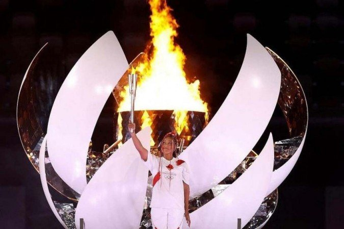
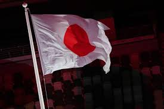
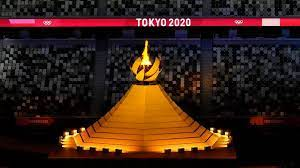

A delegação brasileira foi composta de 309 atletas, que representaram o país em 35 modalidades diferentes, inclusive em esportes que fizeram sua estreia nestes jogos olímpicos.
Durou de 3 de jul. de 2021 – 8 de ago. de 2021
A tenista japonesa Naomi Osaka acendeu a tocha olímpica dos Jogos de Tokyo e com apenas 23 anos de idade acumula sucesso dentro e fora das quadras, com uma postura combativa e transparente.
 